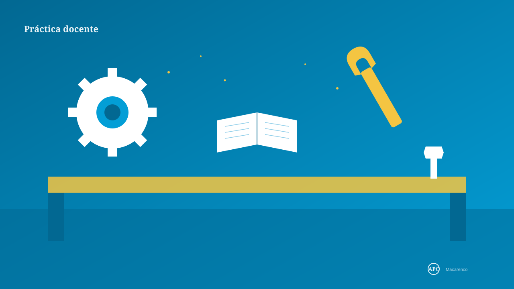

La Campaña de Alfabetización de 1961: un legado pedagógico vigente
La Campaña Nacional de Alfabetización de 1961 movilizó a más de 100 000 brigadistas y redujo el analfabetismo en Cuba del 23,6 % al 3,9 % en apenas un año. Sesenta y cinco años después, su huella metodológica sigue orientando la formación de docentes en la oriental provincia de Santiago de Cuba.
En un contexto marcado por la transformación de la escuela cubana y los retos de la educación contemporánea, los docentes de la región enfrentan decisiones pedagógicas que definirán la calidad del aprendizaje durante la próxima década.
Tres aportes pedagógicos que perduran
Tres elementos explican la vigencia del modelo: la alfabetización concebida como acto político-pedagógico, el principio del maestro popular y el método «Yo sí puedo».

Para los historiadores, sin embargo, no todo es memoria. La revisión crítica del período pone el acento en las tensiones entre alfabetización inicial y educación permanente, un debate que la Filial Santiago de Cuba ha retomado en sus talleres anuales.
Alfabetizar no fue enseñar letras: fue reconocer sujetos. Esa convicción es la herencia que mejor hemos sabido cuidar.
El tránsito de la alfabetización de 1961 a los planes de educación de adultos y formación de docentes marca el origen de la pedagogía cubana contemporánea. La Filial Santiago de Cuba hereda esa tradición y la proyecta hacia los retos de la digitalización del aula.
Lo que viene
Los próximos meses serán clave. El taller regional sobre educación popular y el balance del sexenio formativo podrían marcar el rumbo de la pedagogía cubana de la próxima década. La recomendación generalizada es sistematizar la experiencia acumulada y articularla con los nuevos programas de maestría.